Here's a picture of one standard graph, called the complete bipartite graph between 2 nodes and 3 notes (shorthand \(K_{2,3}\)).
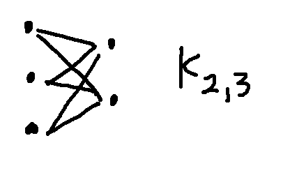
But the two pictures below are also \(K_{2,3}\)). I've color-coded the nodes so you can see which belong to the set of 2 and which to the set of 3.
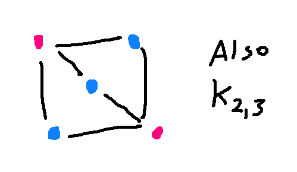 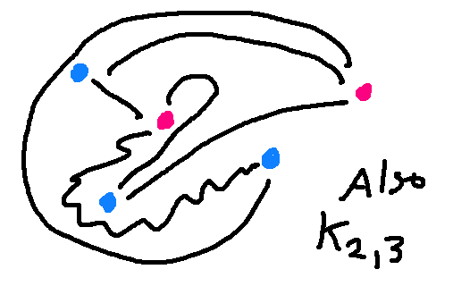
A graph is defined by the nodes and how they are connected. The positions of nodes and the shapes of the edges don't matter mathematically, though obviously some drawings are easier for people to interpret.
To show that two graphs have the same structure ("are isomorphic"), you need to
Consider the following two graphs. To line them up, notice that E and 4 are the only nodes with four edges coming into them. So they have to match. Then D has to match to either 6 or 5. Let's pick 6. Since A is directly connected to D and E, we must pair it with 3, otherwise the edges won't match.
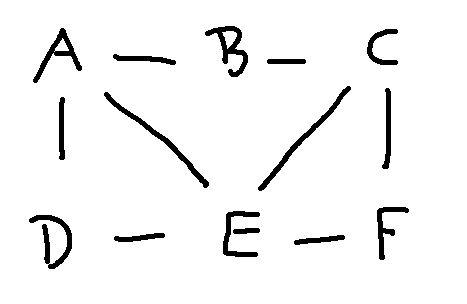 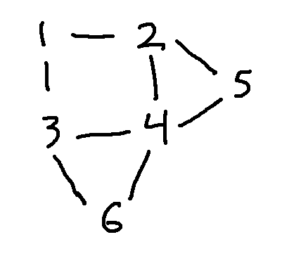
Here's a full matching of the nodes:
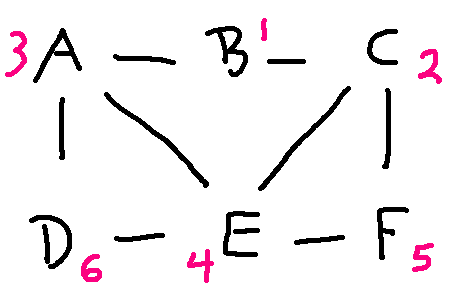
You could also write this out as a table. Unless the graph is complicated, we would usually leave it to the reader (or their computer program) to confirm that the edges line up properly.
| left graph | right graph |
|---|---|
| A | 3 |
| B | 1 |
| C | 2 |
| D | 6 |
| E | 4 |
| F | 5 |
Look at the following graphs. Are they isomorphic? If you fiddle around trying to line them up, it seems like they probably aren't. But how to make a convincing argument?
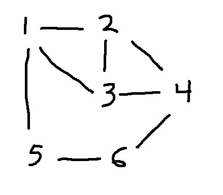
To show that two graphs are not isomorphic, we need to look at invariant properties, i.e. properties that should be preserved by the matching. That is, we need to look at properties that depend only on the nodes and how they are connected.
The two most obvious invariant properties are the number of nodes and the number of edges. Always a good thing to check, since two graphs can't possibly be isomorphic if those don't match. But they match in this example: 6 nodes and 8 edges.
The next easiest thing to check is node degrees, i.e. how many edges go into each node. Corresponding nodes must have the same degree. And, when we start to look at more complex properties, it's helpful to decorate each node with its degree. Let's do that for our two graphs:
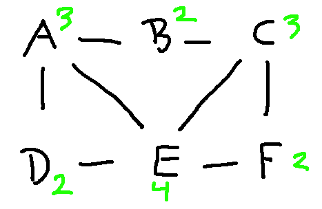 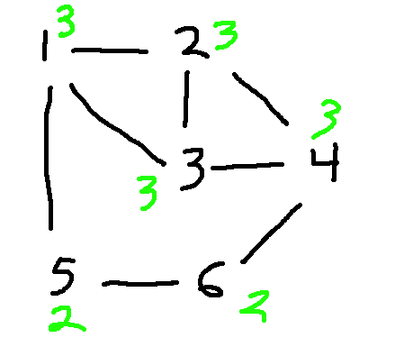
If we list out the node degrees in descending order, we have
Since the degree lists are different, these two graphs aren't isomorphic. In this case, you could make the argument using just one of these degrees: the lefthand graph has a node of degree 4 and the righthand graph doesn't.
Here's another standard graph, called the cycle on 5 nodes (\(C_5\)).
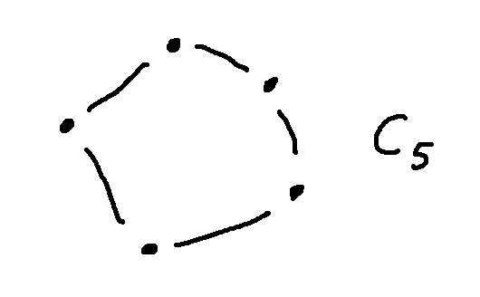
Let add an additional edge, to make a graph that I'll call G.
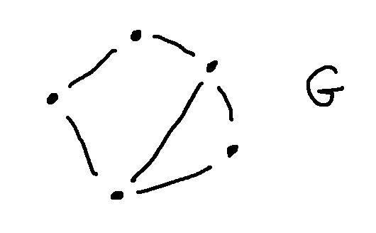
Is G isomorphic to \(K_{2,3}\)?
If we check out the obvious properties, they are the same: 5 nodes, 6 edges, two nodes with degree 3 and three nodes with degree 2. But fiddling around suggests that they don't actually line up.
To show that G and \(K{2,3}\) aren't isomorphic, we need to find a property that depends only on connectivity and is different for the two graphs. One approach is to look at the two nodes of degree three. There is an edge directly connecting these two nodes in G, but not in \(K{2,3}\).
Another approach is to notice that \(K{2,3}\) is "bipartite". That is, its nodes can be divided into two sets, such that all the edges go from one set to the other. \(K{2,3}\) is "complete," which means that all possible edges are actually in the graph. Here's a more typical example of a bipartite graph, with fewer edges and drawn in a less helpful way. Notice that all the edges go between a red node and a blue node, never between two red nodes or two blue nodes.
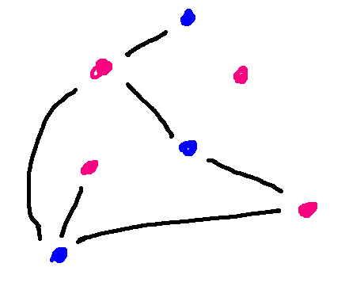
In a bipartite graph, any walk has to go back and forth between the two sets of nodes. So if the walk needs to end where it started (e.g. a cycle), then it must have an even number of edges. If you look back at our example graph G, it has a 5-cycle. Since \(K{2,3}\) is bipartite, it cannot have a 5-cycle. That's another way to argue that these two graphs aren't isomorphic.
We've seen a range of connectivity-based features that can be compared between two graphs, to show that they aren't isomorphic.
If we run out of clever features to compare, the backup plan is a careful exhaustive search of all ways to line up the nodes. If you ever have to do this, use any available features (esp. node degrees) to limit what possible matches you need to consider for each node.